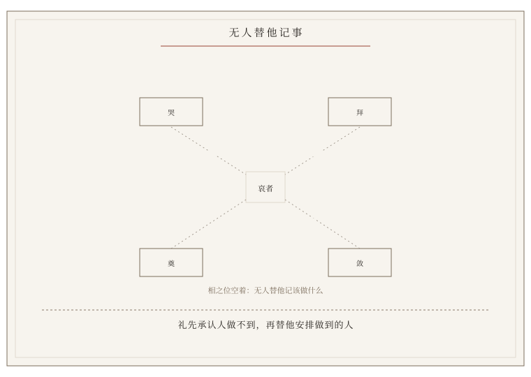

檀弓上 · 三·八十六 · 第 289 课
杜橋之母之喪，宮中無相，以為沽也。
说什么事：杜桥母亲的丧事，家中没有设「相」，时人认为这礼办得粗略。
落在哪一层：礼制之设官，落在「谁替你记事」这一问上。论「哀者不能自理，故礼为之设相」。
为何编在此位：上节论一声称呼，此节论整场丧事的主持。由声到事，由细到总。
【经】杜橋之母之喪，宮中無相，以為沽也。
【注】沽猶略也。
【疏】此一节论丧须立相导之事。沽，粗略也。礼，孝子丧亲，悲迷不复自知，礼节事仪皆须人相导。而杜桥家母死，宫中不立相侍，故时人谓其于礼为粗略。
杜桥 人名，他书无考。
宫中 家中。「宫」指所居之室。
相 赞礼者，导引丧主行礼之人。注「相，息亮反」。
沽 粗略、简略。注「沽犹略也」。
悲迷不复自知 悲哀迷乱，不再能知道自己在做什么。
相导 辅助引导。
杜桥母亲的丧事，家中没有设相（赞礼的人），时人认为这礼办得粗略。
此节一句，讲的是丧礼里一个职位，而理由极动人。
疏把理由摆出来：「礼，孝子丧亲，悲迷不复自知，礼节事仪皆须人相导。」
——人在极哀的时候，记不住礼节，也管不了仪节。所以礼制里预备了一个「相」：替孝子记该做什么、该往哪站、该在何时哭、何时止。
「无相」，时人不说是罪，只说「沽」——粗略。这个判法很准：不是他失礼，是他把这件大事办得潦草，因为他一个人办不了，又没人替他办。
第一层 礼制承认人的无能 这是此节最要紧的一处。一切礼书都在讲「应当如何」，此节却先承认一件事实：在最要紧的关头，人做不到。礼不是假定你行，是预先替你安排了行的人。
放在整个礼制里看，这类安排很多：丧有相，祭有尸，婚有媒，乡饮酒有司正。礼从不要求一个人独自完成大事。
第二层 「沽」这个判语的温度 时人不说「非礼」，说「沽」。若说非礼，就把杜桥当成了违礼之人；说沽，只说这礼办得粗。前者是判人，后者是评事。礼的舆论，最重这种分寸。
第三层 相之设的意义 相不只是司仪。他替孝子记事，等于替孝子的「心」保管秩序——心已经乱了，秩序还在一处，等着他。哀与礼的冲突，就靠这个职位缓解：你可以乱，礼不乱。
第四层 与 276 相照 276 曾子许客「反哭于尔次」，是给人一处可哭之地；此节设相，是给人一套可依之序。两处都在做同一件事：礼为人预备他所缺的那一样——一处地方、一个人。
与今日何干 今人办丧，多有「一条龙」服务，司仪、流程、时间表都有人管。此节给这件事一个古久的依据：不是把丧事外包，是承认哀者办不了，故礼为之设相。要紧的不是有没有人管，是那个人是否替你把礼守住。
| 左 | 右 |
|---|---|
| 宫中无相 | 无赞礼之人 |
| 以为沽也 | 时人评其粗略 |
| 沽犹略也 | 注 |
| 悲迷不复自知 | 哀者之实况 |
| 礼节事仪皆须相导 | 相之职 |
| 礼先承认人做不到 | 而后替之安排 |
| 沽评事，非礼评人 | 舆论之分寸 |
画一间丧家的中庭，视点略俯。庭中设一张素案、两只素器，案前空地上一人（深衣、伏地、身形低伏、不画人面细节）。其旁无人引导，四角空空。庭的另一侧有一道门，门内空无一人，只有门框与门槛。地面上一道浅浅的足迹通向门，又折回。不写文字。赭色只用在伏地者身旁地面上那一小片未铺席的空地边缘，与门框下槛。
